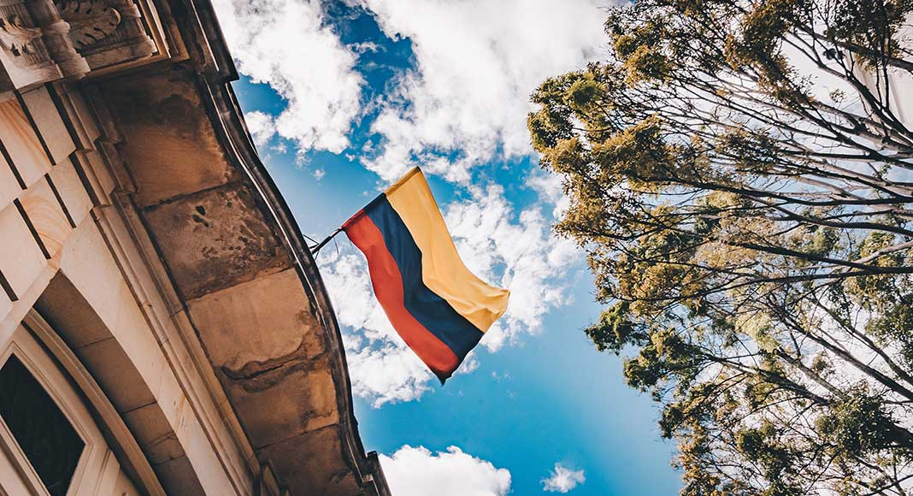

Temperatura promedio: 6°C – 19°C
Altura: 2.650 msnm
Bogotá es la extensa capital en altura de Colombia. La Candelaria, su centro con adoquines, cuenta con sitios coloniales como el Teatro Colón neoclásico y la Iglesia de San Francisco del siglo XVII. También alberga museos populares, incluido el Museo Botero, que exhibe arte de Fernando Botero, y el Museo del Oro, con piezas de oro precolombinas
Bogotá, multicultural, diversa y llena de arte, una ciudad engalanada por los verdes paisajes de sus Cerros orientales y las cientos de especies de aves residentes y migratorias que se pueden encontrar en los humedales, parques y barrios de la capital. En el centro de Bogotá puedes encontrar una extensa riqueza cultural e histórica, reflejada en decenas de museos, universidades, restaurantes, casas de estilo republicano y colonial, y por supuesto en sus emblemáticos Cerros Monserrate y Guadalupe.
Qué hacer | Bicitour gratis por el centro histórico, caminar por el barrio La Candelaria, la plaza de Bolívar y los Cerros orientales,
visitar el Museo del Oro, Museo Botero y Jardín botánico, subir a Monserrate e ir a algún restaurante de Usaquén, Chapinero o la zona G.
Guatavita se encuentra en el departamento de Cundinamarca a aproximadamente 1 hora y media de Bogotá, y es uno de los mejores planes cerca a
Bogotá que puedes hacer un fin de semana.
Algunos de los principales sitios turísticos de Cundinamarca están en Guatavita, entre ellos el Embalse del río Tominé que se extiende hasta el
municipio de Sesquilé, la Laguna de Guatavita y obviamente su pueblito.
Temperatura promedio: 19°C
Altura: 2.150 msnm
Villa de Leyva es una ciudad colombiana en el noreste de Bogotá. Es conocida por sus edificios coloniales encalados, las calles con adoquines y la gran Plaza Mayor.
Al norte de Bogotá se encuentra el departamento de Boyacá.
Una tierra fértil en la que crecen muchas de las frutas y verduras que abastecen a otras partes del país y entres las que destacan sus dulces
melocotones, o como los llaman en Colombia, duraznos. En Boyacá hay un gran número de ciudades coloniales.
Entre todas ellas destaca Villa de Leyva, una ciudad de calles empedradas y casas encaladas que se ha convertido en una excursión obligada desde la capital colombiana.
Este es considerado como uno de los pueblos más lindos de Colombia, un pueblito colonial que parece haberse quedado congelado en el tiempo,
guardando su encanto colonial y arquitectura típica de edificios con paredes de cal, calles empedradas y calicanto.
Este es uno de los lugares turísticos de Colombia más visitados, y aunque esa alta afluencia de visitantes ha cambiado la esencia del pueblito y las
dinámicas sociales, aún es posible vivir una experiencia más tranquila y original, en días entre semana.
Para llegar a Villa de Leyva puedes llegar desde la Terminal Salitre de Bogotá, cada trayecto en bus dura cerca de 3 horas y media, y el pasaje lo encuentras desde $25.000 COP.
Qué hacer En este lugar, se puede conocer la plaza mayor más grande del país, la iglesia de Nuestra Señora del Rosario y visitar sus museos.
Ir a la Casa de Terracota, a los Pozos Azules, al Parque Arqueológico de Monquirá, al Convento Santo Ecce Homo, Ráquira y al Santuario de Flora y Fauna Iguaque.
Hospedaje Hotel Casa Terra, Glamping Aventura Park, Hostal Casa del Arte, Nibiru Hostel, Amonita Casa, Hotel Villa del Angel, Green Garden Hostel, Hotel y Spa Getsemani y Casa Hotel San Pedro.